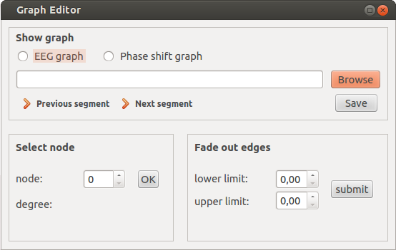

In order to launch the GraphEditor run the model.py module in the project folder. For the editor to work you need to have the libraries Networkx and Matplotlib imported.
Then the following editor should appear:

- Please choose either “EEG graph” or “Phase shift graph” so that the model module knows in which color to draw the graph when a button is clicked.
- Then browse a .csv file. At this point there are three issues to take care of.
The filename should look something like: “<Dateibeschreibung>_1.csv” as the previous and next button split the filname at “_” and ”.” in order to generate the previous or next file directory.
Further the float values in the file should look like: 8.5 instead of 8,5 in order to be read in correctly to the networkx graph.
Plus the edges in the .csv file should be seperated by spaces.
If these conditions are given a graph of your file should automatically be drawn in an extern window.
- After having chosen a file you can excute certain actions on the graph:
Note: Please make sure that you use the right backend for printing the graph with matplotlib. Otherwise you might not be able to interact with the graph window but only with the editor. The default backend for this programm is “Qt4Agg”. You might have to change it using matplotlib.use(“backendname”). You can find a list of various backends on matplotlib.org.